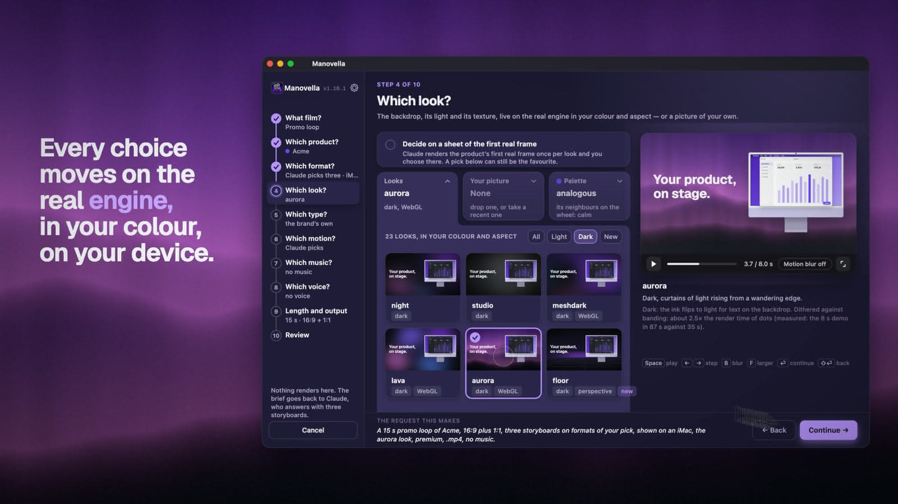
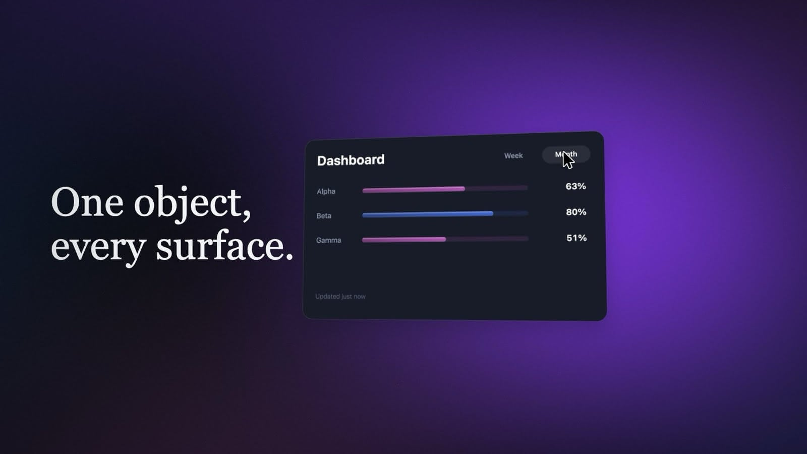

Manovella
Product films,
written as code
A Claude Code plugin that makes promo, launch, release and tutorial films of your product, on your Mac. Every frame is a pure function of time, with real motion blur, loops exact to the pixel and your UI as vector.
$ claude plugin marketplace add gfazioli/manovella
$ claude plugin install manovella@manovellaMade with Manovella
The launch film, one minute long, made with the plugin itself: every frame drawn by the engine and rendered on a Mac, the voice made on that Mac, the scenes timed to the music’s bars.

The voice is Orpheus, run on the Mac; the music was generated with Google Gemini, and every track carries Google’s inaudible SynthID watermark. The player comes from YouTube and loads only when you press play (privacy), or watch it on YouTube.
The engine, live
This is the real engine, running in your browser. Every frame is a function of time, seek(t): drag the scrubber and the film is drawn at that instant, from scratch.

An 8 s loop at 60 fps. Here it plays at screen speed; the renderer asks the same function for sixteen subframes per frame and blends them, which is where the motion blur comes from.
What sets it apart
Deterministic by construction
Not by a list of rules to keep: there is no timeline state and no timer to forbid.
seek(t)draws the frame attfrom scratch, so a still, a draft and the master are the same drawing.Motion blur on every frame
Always on, never a setting to remember. Each frame is the mean of sixteen subframes on their own subpixel offsets, so it is a 16-sample antialias too; a fast move gets 48. The shutter goes from 360° to a film camera's crisper 180°.
Loops exact to the pixel
A promo loop ends on the very frame it began with, so a page or a feed plays it forever without a seam. Checked, not eyeballed.
Your product's own UI, as vector
Rebuilt from its source: windows, menus, a cursor and real shortcuts, sharp at any resolution, never a screen recording.
Sound you hear before you choose
Six voice presets and thirteen voices from three local models say your line before you pick one. Your music, from a library of yours or a file, has its beat measured, the cuts land on it, and the voice is heard over it before you choose. Subtitles in the film, beside it, or both.
Release films from a tag
Name a version: what it changed is shown changing in place, between two version cards.
On your Mac, and cool
No upload, no render farm: every frame is drawn and encoded on your Mac. A render runs in the
utilityQoS class on a third of the cores, and a governor holds the workers when the chip passes 80 °C.Small and steady
A 5 MB plugin with no build step: pages and Node scripts that drive the Chrome and ffmpeg on your Mac. One kind of film, made the same way every time.
The Studio
/manovella:studio opens a window of its own: ten steps from a recipe to a brief, where every choice is shown moving on the real engine, in your product's colour and the film's aspect, and the sound is heard. Each step is a deck of cards that says at a glance what is chosen in it. It ends with a brief.json that Claude answers with three storyboards.

- What filmpromo loop, social teaser, film in chapters, release film, README GIF, tutorial, from scratch
- Which producta repository or a URL; its accent guessed from the source
- Formateleven, and the device the product is shown in: a Mac window, a MacBook, an iMac, an iPhone, an iPad, a browser, a terminal, or the UI alone
- Looktwenty-three, or a picture of yours
- Typefifteen sets, or any installed family
- Motionthirteen ways for a headline to arrive, twenty-four cuts, the pace, the shutter
- Musicyour music library, a file of yours, or a new one from Gemini
- Voicesix presets, thirteen voices made on the Mac and heard over the music, subtitles
- Length and outputthe kind's own length or one you type; aspects, frame rate, resolution, files
- Reviewthe brief, before the storyboards
The catalogue
Every look, format, cut, type set, headline style and device, drawn by the engine itself. Open one to see it whole.


How a film is made
- Ask, in words or in the Studio: what film, of what, for where.
- Three storyboards, on three different formats, on the music's beat grid. You pick one.
- Stills and a contact sheet of the first real frames, the looks sheet if the look is open.
- A draft at a sixteenth of the work, then the masters:
.mp4(H.264 or HEVC),.mov(ProRes 422 HQ),.webmor.gif, every aspect asked for, a cover per aspect, chapter marks for a long film. On the looktransparentwithALPHA=1, a transparent film to lay over footage:.mov(ProRes 4444) or.webm(VP9 with alpha). - Delivery: the finished films leave the work folder for a folder of their own; once the film is out, the work folder goes to the Trash after its source is checked safe in the product's kit.
Install and requirements
Install
claude plugin marketplace add gfazioli/manovella
claude plugin install manovella@manovellaTo update by hand: claude plugin marketplace update manovella, then claude plugin update manovella@manovella. Or declare it in ~/.claude/settings.json (merged into what is there) and Claude Code keeps the plugin current: { "extraKnownMarketplaces": { "manovella": { "source": { "source": "github", "repo": "gfazioli/manovella" }, "autoUpdate": true } } }.
Then ask: "a 15 s promo loop of acme.app, 16:9 and 9:16, with our music", or open /manovella:studio. The docs take it from there.
Requirements
- macOS on Apple Silicon, with Claude Code.
- Node (tested with 24.3), ffmpeg (tested with 9.0.2) and Google Chrome, which the renderer drives through
playwright-coreinstalled in each film's work folder: nothing else is downloaded. With Homebrew:brew install node ffmpeg. - Xcode Command Line Tools (
swiftc), optional: for the Studio's own window and the chip's thermometer. Without them the Studio opens in a Chrome app window, and renders are held on macOS's thermal state. - Voices, optional: Python 3.13 and a one-time voice setup. Without them a film speaks with a macOS voice, or not at all.
Questions
Is Manovella free?
Yes. Manovella is free and MIT-licensed. If it saves you time, you can sponsor its development or buy me a coffee.
Is it an AI video generator?
No. Claude writes the film as code: one HTML canvas whose every frame is a pure function of time, seek(t). Headless Chrome captures it frame by frame, sixteen subframes each, and ffmpeg blends and encodes them. No generative video model draws a frame.
How is it different from other HTML-to-video tools?
It is narrower on purpose. Many are general: any kind of video, a timeline editor, rendering in the cloud. Manovella makes films of your product, the same way every time: a pure function of time drawn on a canvas, motion blur on every frame, loops exact to the pixel, your UI rebuilt as vector, its sound heard before it is chosen, and every frame rendered on your Mac.
Does it record my screen?
No. Your product's UI is rebuilt as vector from its source: windows, menus, a cursor and real shortcuts, sharp at any resolution, never a screen recording.
What do I need to run it?
macOS on Apple Silicon with Claude Code, Node, ffmpeg and Google Chrome, and, optionally, the Xcode Command Line Tools for the Studio's own window and the chip's thermometer. Voices are optional: Python 3.13 and a one-time setup, or a macOS voice.
Does it run on Linux or Windows?
Manovella is macOS-first: the Studio's window, the thermometer that keeps renders cool and the macOS voices are Mac code, and it is built and tested on macOS on Apple Silicon.
Which files do I get?
.mp4 (H.264 or HEVC), .mov (ProRes 422 HQ), .webm or .gif, in every aspect you ask for, with a cover per aspect and chapter marks for a long film. A transparent film (the look transparent, rendered with ALPHA=1) comes as .mov (ProRes 4444) or .webm (VP9 with alpha).
Will a render overheat my Mac?
A render is minutes of work, so it runs in the utility QoS class on a third of the cores, and a governor holds the workers whenever the chip passes 80 °C (without the Xcode Command Line Tools, whenever macOS says the Mac is hot).
Can I use my own music and voice?
Yes. Point Manovella at a music library, a folder of audio files, and the Studio lists its tracks: their beat is measured and the cuts land on it. A voice-over comes from a local voice model or a macOS voice, with subtitles.
Will it render something I did not ask for?
No. A film is made when it is asked for, after you have seen the storyboards and the stills.
Where do the finished films go?
Where the project's own instructions keep finished media, else <name>/ in the work folder, ~/Downloads unless the Studio’s Settings say otherwise. If you turn on Deliver finished films into it too in the Settings’ music library, they go to <library>/<Brand>/video/<name>/ instead.